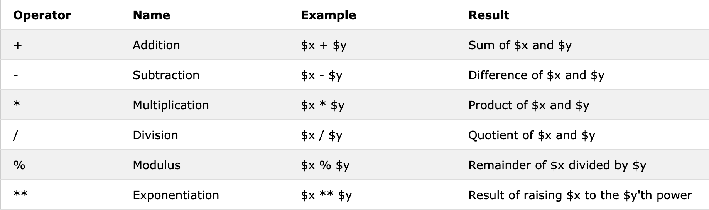
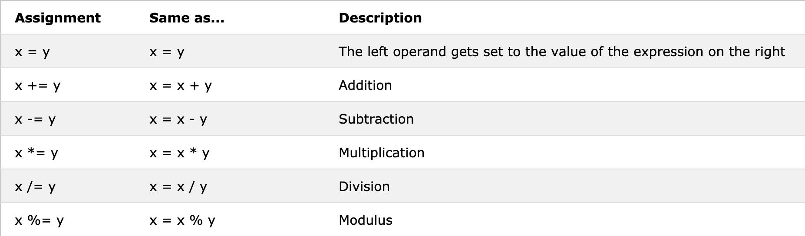
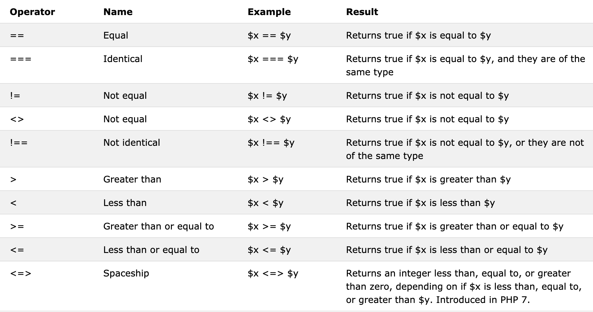
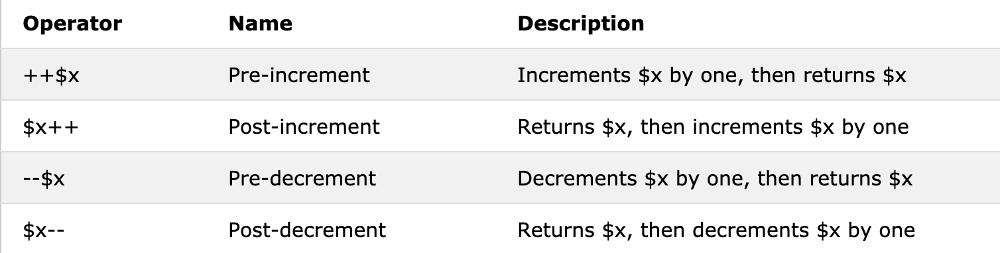
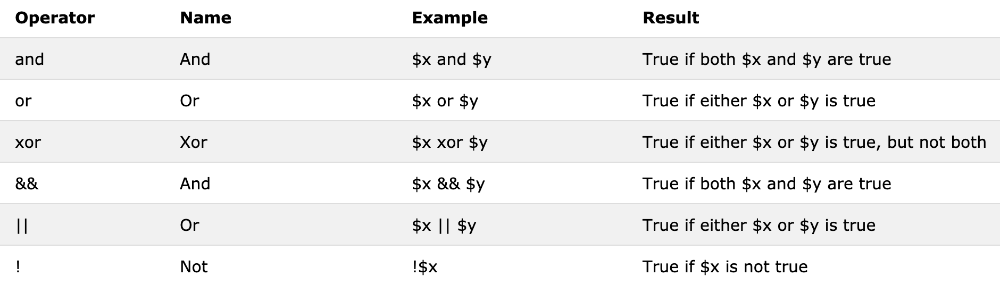
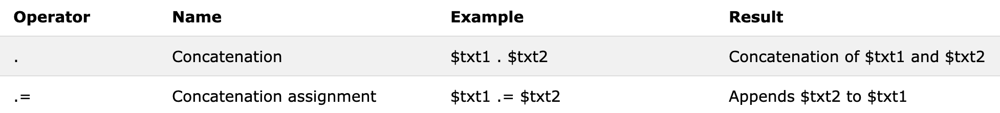

# PHP Operators Operators are used to perform operations on variables and values. PHP divides the operators in the following groups: - Arithmetic operators - Assignment operators - Comparison operators - Increment/Decrement operators - Logical operators - String operators - Array operators - Conditional assignment operators --- # PHP Arithmetic Operators <p></p> --- # PHP Assignment Operators The PHP assignment operators are used with numeric values to write a value to a variable. <p></p> --- # PHP Comparison Operators The PHP comparison operators are used to compare two values (number or string): <p></p> --- # PHP Increment / Decrement Operators <p></p> --- # PHP Logical Operators <p></p> --- # PHP String Operators <p></p> ---